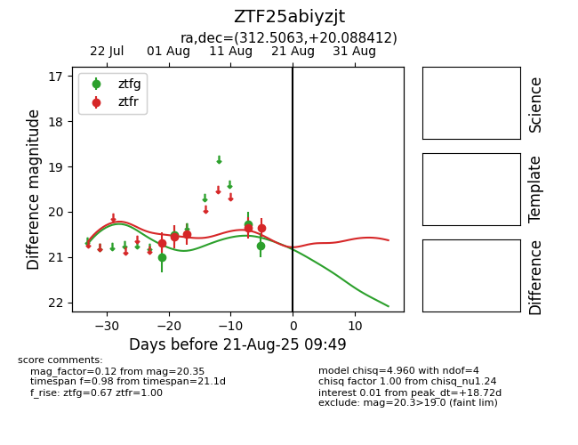

Target ZTF25abiyzjt at 2025-08-21 09:49, see:
FINK: fink-portal.org/ZTF25abiyzjt
Lasair: lasair-ztf.lsst.ac.uk/objects/ZTF25abiyzjt
ALeRCE: alerce.online/object/ZTF25abiyzjt
alt names
ZTF25abiyzjt (ztf,alerce)
coordinates:
equatorial (ra, dec) = (312.5063,+20.08841)
galactic (l, b) = (65.3083,-14.88238)
photometry
last ztfg=20.74, ztfr=20.35
4 ztfg, 5 ztfr detections
